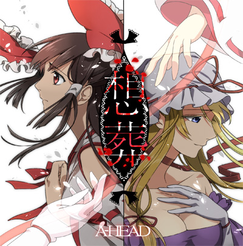

Information

- タイトル
- 想葬
- 内容
- 東方ヘヴィメタル・オルタナティブメタルアレンジアルバム
- リリース
- コミックマーケット92 1日目 東モ39b「A-HEAD」
- 価格
- 会場 ￥1,000 / 委託 ￥1400（税込）
- 委託先
- メロンブックス
Tracklist
- 01. 紅灯月時計 ～ ルナ・ダイアル
- 02. 虹色喪失【壊】U.N.オーエンは彼女なのか？
- 03. 誰が為の、春色小径 ～ Colorful Path
- 04. 沈黙恋色マスタースパーク
- 05. 選んだ話ネクロファンタジア / 少女幻葬 ～ Necro Fantasy / 妖々跋扈
- 06. 宵明亡き王女の為のセプテット
- 07. 傍観六十年目の東方裁判 ～ Fate of Sixty Years
重要事項
歌詞カードの不備について
Tr.05「選んだ話」において、後半部分の歌詞が歌詞カードに入っていない不備を確認いたしました。
正しい歌詞カードはこちらを参照してください。
既に本作品を手にとっていただいた方、また歌詞及びデザインを作成していただいたマカキセキさんには多大なご迷惑をお掛けし申し訳ございません。
──秋時
Stafflist
- Music Composed by ZUN - 上海アリス幻樂団
- Produced by A-HEAD
- Lyrics Written by マカキセキ(tr.2/3/4/5/6/7) - なんか好き。, 秋時(tr.1)
- All Music Arranged by 秋時
- Vocal Performed by arato(tr.1/4/6/7), うろこ(tr.2/3/5)
- Guitar/Bass/Drums Played & Manipulated by 秋時
- tr.4 Guest Guitar Solo Performed by Isami
- Piano/Keyboard Playd & Manipulated by arato
- Mix and Masterd by 秋時
- tr.7 Guitar Recorded by 鷹
- Vocal Recorded at Studio KPP by 七誌
- Jacket Illustrated by 駒碧
- Designed by マカキセキ - なんか好き。